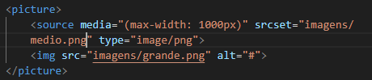

todo seu conteudo tem que se adaptar ao tamanho de tela por ex, tv, pc e celular, é importante que você diminua as imagens em editores para diminuir o tamanho do arquivo para assim ter um site mais rapido, e não um site lento.
o tamanho normal para celular é 300x300, o de pc é 1000x1000 e o tablet é 700x700.
existe uma tag especifica para carregar imagens especificas para dispositivos especificos e essa tag se chama (picture), e também é importante que você coloque a tag chamada (sourse media)
seu código deve ficar assim:
obviamente mudando o (type) e o (max-width) dependendo do tamanho e tipo da imagem, algo que esqueci de mencionar é que você deve mudar o (min-width) para (max-width)
você também deve deixar os sources de imagens de MENOR pra MAIOR
esse é o vídeo a qual você viu para fazer o exercicio